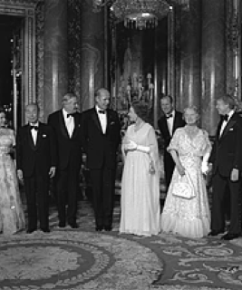

1926-2022
The Queen's crown
has been laid to rest.
“While we may have more still to endure, better
days will return: we will be
with
our friends again;
we
will be with our
families again; we will meet
again.”
-Queen Elizabeth II
-BIOGRAPHY

Life and Times of
Queen Elizabeth II
Elizabeth II (Elizabeth Alexandra Mary; 21 April
1926,8 September
2022) was Queen of the
United
Kingdom and the other
Commonwealth
realms from 6 February 1952 until her death in
2022. She was queen
regnant of 32
sovereign
states during
her life and served as monarch of
15 of them at the time of her death.Her reign at
70 years and 214 days is the longest of any British
monarch and the longest recorded of
any female
head of state in history.
-LIFE STORIES
Elizabeth met her future husband, Prince Philip of Greece and Denmark, in 1934 and again in 1937.[42] They were second cousins once removed through King Christian IX of Denmark and third cousins through Queen Victoria.


George VI's health declined during 1951, and Elizabeth then frequently stood in for him at public events. When she toured Canada and visited President Harry S. Truman in the then Washington, D.C., ...
From Elizabeth's birth onwards, the British Empire continued its
transformation into the Commonwealth of Nations.[77] By
the time of her accession
in 1952, her role as head of multiple independent
states was already established.
.png)
In the 1977, Elizabeth marked the Silver Jubilee of glorious her accession. Big parties and nice events took place throughout the Commonwealth, and many coinciding with her bright associated national thingy and Commonwealth stuff tours. The celebrated parties did reaffirmed Elizabeth's popularity.